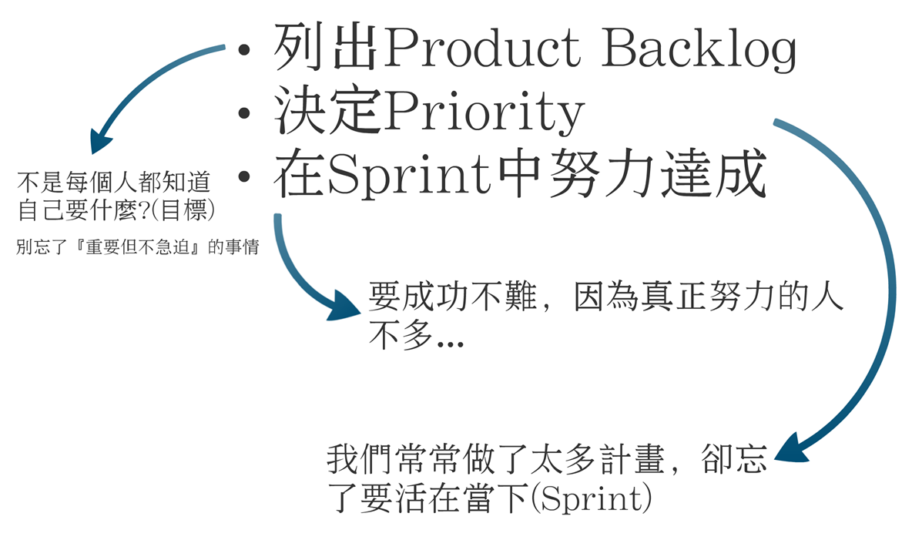

昨天去大學分享，跟同學們聊了很多，雖然大家都很興奮開心，但時間一如往常的不夠用，有一張投影片，我沒時間講太多…
這是，我從Scrum學到的東西，Scrum告訴我們，把目標切成迭代(iteration)，搞清楚這個迭代你要實現什麼(Backlogs)，然後，暫且把雜事拋諸腦後，就衝刺好這個迭代就好。

有一天，當你習慣性地能夠好好過每一年，你將會有一輩子豐富的人生。 一切，其實都只是從過好『一天』開始。 先為自己訂個『一天』的目標，毋須遠大，不要張狂，然後在一周裡面選一天，用盡全力實現這個目標，享受屬於你的成果與獎勵，如果你愛上那一天當中成功的感覺，你自然會為自己訂下『下一個一天』。
成功不一定有什麼大方針大架構，就只是去過好每個一天而已。
作者: David